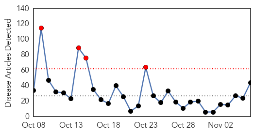
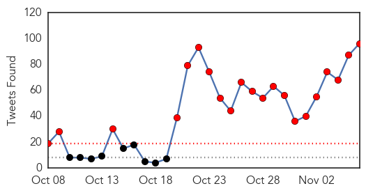
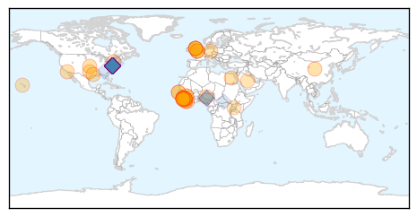
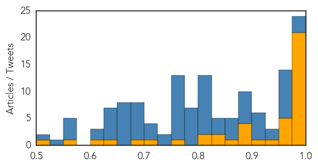

Ebola
30-Day Web Trend
4 alerts, 0 warnings

30-Day Twitter Trend
25 alerts, 0 warnings

Article Locations
Article Confidences
Top Articles:
- 1.000
- The Last Place on Earth With Ebola: Getting Guinea to Zero
- 0.999
- The end of Ebola in Sierra Leone
- 0.999
- US Ebola training focuses on astronaut-like gear
- 0.999
- The end of Ebola in Sierra Leone
- 0.999
- Sierra Leone hours from being declared free of Ebola
- 0.999
- Sierra Leone hours from being declared free of Ebola
- 0.999
- Sierra Leone: Reaching and staying a resilient zero - Sierra Leone
- 0.998
- Learning Ebola's Lessons -- The Hard Way
- 0.998
- Sierra Leone emerges from Ebola nightmare
- 0.998
- Britain hails end of Ebola outbreak in Sierra Leone
- 0.997
- Ebola scare travels from Texas to Ohio
- 0.996
- How technology can help reboot Ebola-free Sierra Leone
- 0.996
- Sierra Leone to be declared ebola-free but challenges remain - Sierra Leone
- 0.993
- Sierra Leone's freedom from ebola virus epidemic sparks street parties and sadness
- 0.991
- WHO Approves Untested Ebola Medication As Emergency Measure
- 0.990
- Sierra Leone emerges from Ebola nightmare
- 0.985
- Scottish university scientist behind successful rapid-detection Ebola test
- 0.984
- Ebola outbreak: WHO 'delayed Sierra Leone state of emergency'
- 0.982
- Anticipation Grows as Sierra Leone Readies to be Declared Ebola-free
- 0.980
- Sierra Leone's frontline aid workers count down to Ebola-free declaration
- 0.977
- The most from the coast
- 0.971
- FOIA docs: Press aide encouraged CDC boss Tom Frieden to appear on ‘The O’Reilly Factor’
- 0.964
- Tzu Chi Foundation USA Ships Needed Medical Support to Sierra Leone - Sierra Leone
- 0.962
- Ebola And Hospital Acquired Infections
- 0.962
- Scottish university scientist behind successful rapid-detection Ebola test
- 0.953
- Global Times Newspaper
- 0.935
- Scots scientists invents rapid Ebola test kit that fits in suitcase
- 0.912
- The Ebola mobile suitcase laboratory successfully tested in Guinea
- 0.899
- UNICEF Guinea Ebola Situation Report, 28 October 2015 - Guinea
- 0.897
- Anticipation Grows as Sierra Leone Readies to be Declared Ebola-free
- 0.888
- Anticipation Grows as Sierra Leone Readies to be Declared Ebola-free
- 0.883
- Biologists talk pathogens at Women in Science lecture
- 0.855
- Sierra Leone News: D-Day is here: Voices on the Street « Awoko Newspaper
- 0.838
- Counting down to an Ebola-free future in Sierra Leone
- 0.838
- Will climate change = more disease?
- 0.806
- US health experts tip Ugandan medics
- 0.801
- Amidst Ebola Crisis, Coordination and Long-Term Thinking Pay Off
- 0.769
- Sierra Leone girls forced into 'degrading' pregnancy tests after school ban
- 0.709
- ‘One of Liberia’s True Friends’
- 0.687
- Mabesseneh Hospital wants financial and non‐financial supports
- 0.627
- Sierra Leone News: Tomorrow is a great day for Sierra Leone-Amb. Zhao « Awoko Newspaper
- 0.603
- Will This Be Our Decade of Data Use?
- 0.559
- Sierra Leone: Shamed and blamed: Pregnant girls’ rights at risk in Sierra Leone
- 0.519
- Sierra Leone News: Safe and dignified burial policy no longer needed after tomorrow-Palo Conteh « Awoko Newspaper
Top Tweets:
- 0.998
- Sierra Leone after Ebola - https://t.co/qdsreOHxHQ ebola
- 0.997
- Hospitals offer FREE Ebola Virus Vaccines read how people get injected with Ebola https://t.co/cFU5DASEcI
- 0.997
- Hospitals offer FREE Ebola Virus Vaccines read how people get injected with Ebola https://t.co/cFU5DASEcI
- 0.996
- Britain hails end of Ebola outbreak in Sierra Leone - https://t.co/KhcD1FBu96 ebola
- 0.996
- US Hospitals offer FREE Ebola Virus Vaccines read how people get injected with Ebola https://t.co/cFU5DASEcI
- 0.996
- US Hospitals offer FREE Ebola Virus Vaccines read how people get injected with Ebola https://t.co/cFU5DASEcI
- 0.996
- US Hospitals offer FREE Ebola Virus Vaccines read how people get injected with Ebola https://t.co/cFU5DASEcI
- 0.996
- US Hospitals offer FREE Ebola Virus Vaccines read how people get injected with Ebola https://t.co/cFU5DASEcI
- 0.996
- US Hospitals offer FREE Ebola Virus Vaccines read how people get injected with Ebola https://t.co/cFU5DASEcI
- 0.996
- US Hospitals offer FREE Ebola Virus Vaccines read how people get injected with Ebola https://t.co/cFU5DASEcI
- 0.996
- US Hospitals offer FREE Ebola Virus Vaccines read how people get injected with Ebola https://t.co/cFU5DASEcI
- 0.996
- US Hospitals offer FREE Ebola Virus Vaccines read how people get injected with Ebola https://t.co/cFU5DASEcI
- 0.996
- US Hospitals offer FREE Ebola Virus Vaccines read how people get injected with Ebola https://t.co/cFU5DASEcI
- 0.996
- US Hospitals offer FREE Ebola Virus Vaccines read how people get injected with Ebola https://t.co/cFU5DASEcI
- 0.996
- US Hospitals offer FREE Ebola Virus Vaccines read how people get injected with Ebola https://t.co/cFU5DASEcI
- 0.996
- US Hospitals offer FREE Ebola Virus Vaccines read how people get injected with Ebola https://t.co/cFU5DASEcI
- 0.996
- US Hospitals offer FREE Ebola Virus Vaccines read how people get injected with Ebola https://t.co/cFU5DASEcI
- 0.996
- US Hospitals offer FREE Ebola Virus Vaccines read how people get injected with Ebola https://t.co/cFU5DASEcI
- 0.996
- US Hospitals offer FREE Ebola Virus Vaccines read how people get injected with Ebola https://t.co/cFU5DASEcI
- 0.996
- @RealBenCarson US Hospitals offer FREE Ebola Virus Vaccines read how people get injected with Ebola https://t.co/cFU5DASEcI
- 0.994
- Sierra Leone's freedom from ebola virus epidemic sparks street parties and sadness - https://t.co/dUCbUDQi8X ebola
- 0.994
- Ebola outbreak: WHO 'delayed Sierra Leone state of emergency' - https://t.co/uuAYIn5Wed ebola
- 0.993
- After Ebola: Isha Johansen on Sierra Leone's homecoming - https://t.co/N7GyGxIz8g ebola
- 0.992
- The Ebola mobile suitcase laboratory successfully tested in Guinea - Medical Xpress https://t.co/XFVZGvd7BB ebola EVD
- 0.991
- US Hospitals offer FREE Ebola Virus Vaccine to People https://t.co/cFU5DASEcI ebolafreesierraleone ebola EbolaOutbreak West Point
- 0.990
- A model of the Ebola epidemics in West Africa incorporating age of infection - https://t.co/rDrz2DK5kC ebola
- 0.989
- How technology can help reboot Ebola-hit Sierra Leone - https://t.co/czQZiku7lq ebola
- 0.986
- Aids+Ebola - https://t.co/G3eyBCJDcV ebola
- 0.985
- Plymouth Helps Sierra Leone Become Ebola-Free - https://t.co/UgyY7IdmDo ebola
- 0.983
- The Ebola mobile suitcase laboratory successfully tested in Guinea - https://t.co/HlFrpZ0IOe ebola
- 0.982
- Ebola And Hospital Acquired Infections - ValueWalk https://t.co/MdQNS1XV5I ebola EVD
- 0.979
- Sierra Leone News: UK Spent £427M towards ending ebola in - https://t.co/alxpWMz5Gr ebola
- 0.979
- Ebola And Hospital Acquired Infections - https://t.co/mvHEm78osl ebola
- 0.978
- Isolation of infectious cases was key to eliminating Ebola in Sierra Leone - https://t.co/gHtkswlSKr ebola
- 0.978
- British Ebola nurse returns to hospital - https://t.co/DuImBxkJOc ebola
- 0.976
- Express Ebola test developed - https://t.co/CQJeGcPoip ebola
- 0.974
- The end of Ebola in Sierra Leone - https://t.co/LAq4o3g5aY ebola
- 0.970
- Sierra Leone kids on their country being Ebola free - https://t.co/jp108PxiJ7 ebola
- 0.969
- WHO's next? Changing authority in global health governance after Ebola - https://t.co/lkDVWmL9kr ebola
- 0.969
- Plymouth role in Sierra Leone Ebola-free status - https://t.co/KSxpIPaxbZ ebola
- 0.965
- Scots scientist's Ebola testing kit rolled out in West Africa - https://t.co/HL0PS8Gkto ebola
- 0.964
- At a glance: Sierra Leone - https://t.co/ilFIJ6561n ebola
- 0.959
- WHO refutes 'rumor' of new Ebola case in Sierra Leone - https://t.co/RRgw4flRFJ ebola
- 0.958
- Liberians remember Ebola victims - https://t.co/U6voh3u55v ebola
- 0.956
- how close are scientists to curing ebola - https://t.co/EST7HzwPgX ebola
- 0.955
- How Ebola led to more teenage pregnancy in West Africa - https://t.co/qnHWQW3nOa ebola
- 0.954
- Ebola : Reaching and staying a resilient zero - https://t.co/qKMtSBSeal ebola
- 0.953
- No New Ebola Case - https://t.co/7KhxM8ptXP ebola
- 0.951
- Sierra Leone calls for vigilance in Ebola-free countdown - https://t.co/55TTiY3UTV ebola
- 0.948
- Are Chemtrails dispersing Ebola & Plague infected web-like substances in order to initiate a ... - https://t.co/J8bDVtXyvm ebola
Showing top 50 tweets...
Hepatitis
30-Day Web Trend
0 alerts, 0 warnings

30-Day Twitter Trend
0 alerts, 0 warnings

Article Locations

Article Confidences

Top Articles:
Top Tweets:
-
No tweets found for Nov 06, 2015